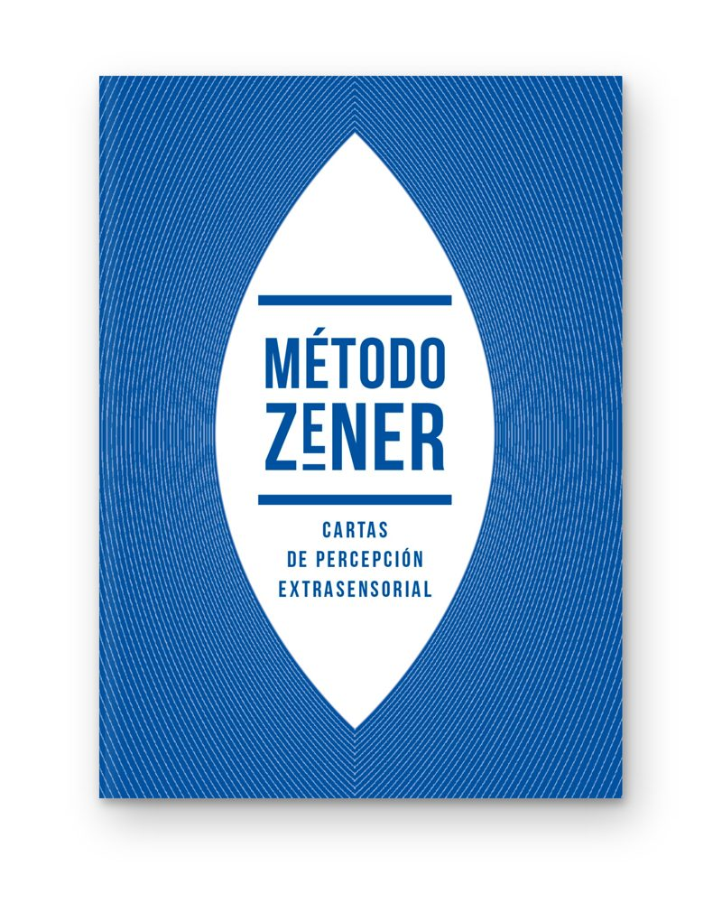
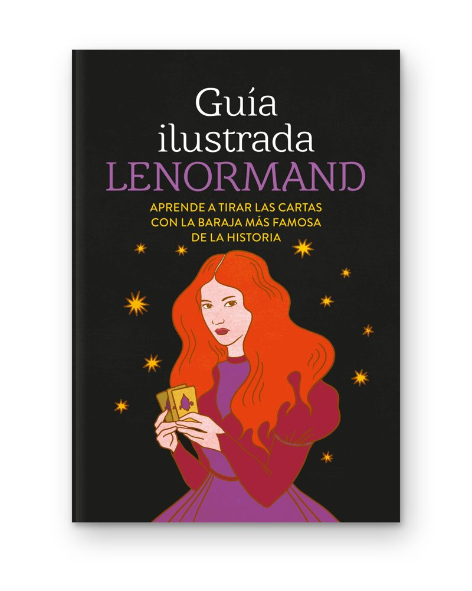
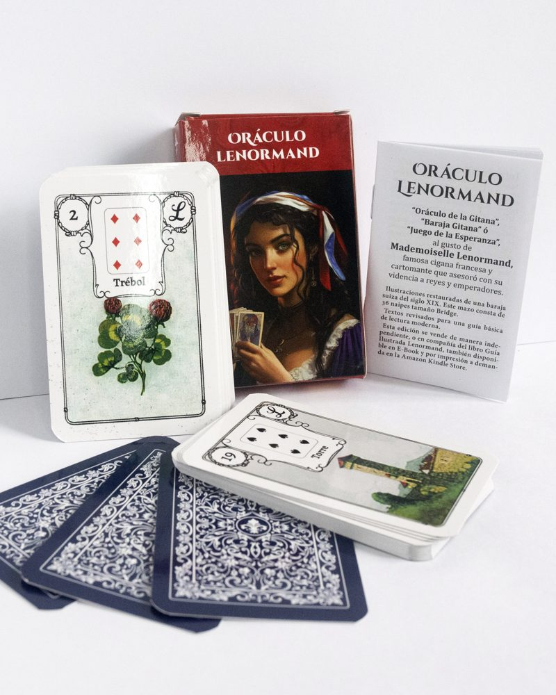
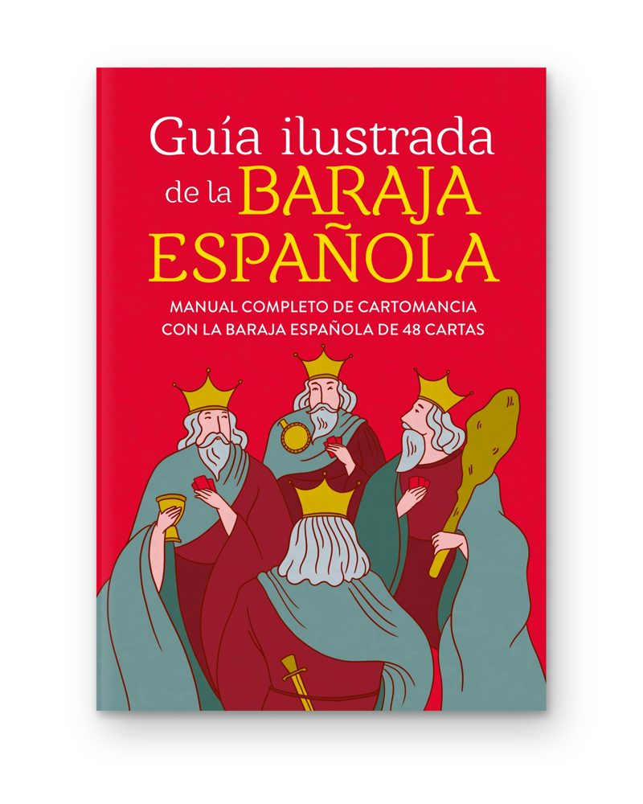
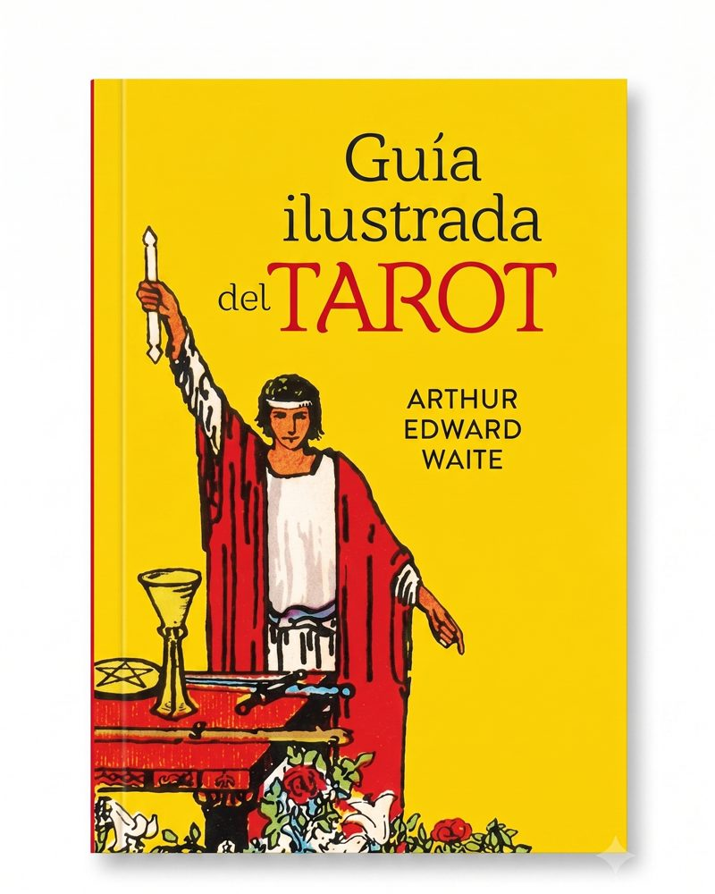
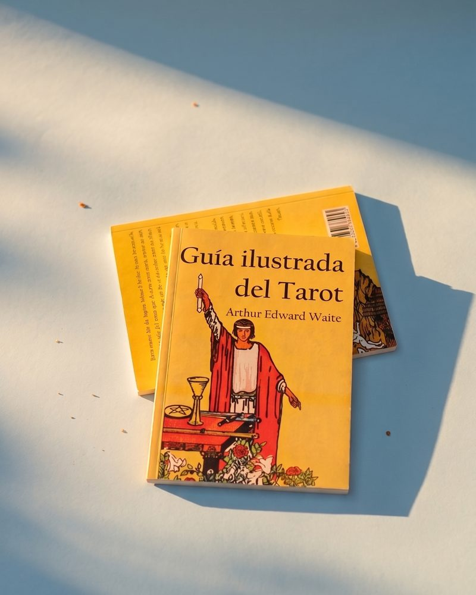
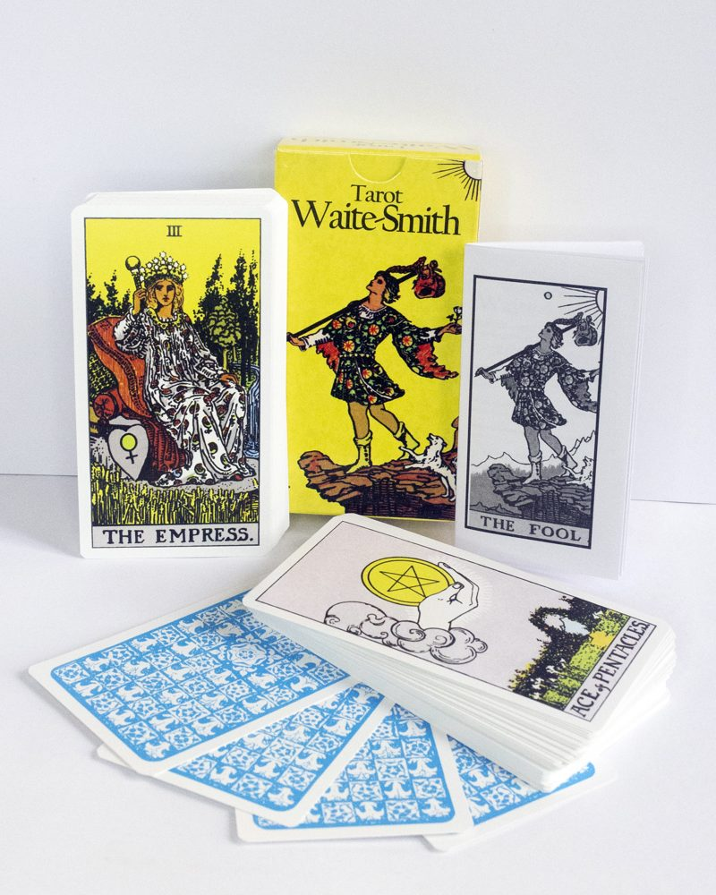

NovedadMétodo Zener
Kit: mazo de cartas + libro de 32 páginas + estuche
ISBN 9786310171142
Cartas para medir la percepción extrasensorial, con la historia y la metodología del experimento.
Ver más
Cartas para medición de la Percepción Extra Sensorial (ESP) + libro de 32 páginas con la historia y la metodología del experimento. También trae acceso a materiales digitales descargables y una asistencia de IA para evaluar los resultados del experimento.
Este experimento, desarrollado hace casi 100 años en Estados Unidos, es utilizado desde entonces para evaluar las capacidades de percepción extrasensorial de una persona.

Guía Ilustrada Lenormand
Libro · 2da edición · 110 páginas · 20 x 14 cm
ISBN 9786310061474
Aprende a tirar las cartas con la baraja más famosa de la historia.
Ver más
Libro con los significados de las cartas y métodos de lectura. Una excelente forma de iniciarse en la lectura de la baraja Lenormand.
También disponible en combo con el Oráculo Lenormand de Enecé.

Oráculo Lenormand
Mazo · cartas de 88 x 57 mm · con guía básica de lectura
ISBN 9786310064062
Basado en una baraja suiza del siglo XIX, restaurada digitalmente.
Ver más
Impreso en cartulina de 300 g y laminado de ambas caras con polietileno brillante. Respeta la originalidad de las barajas Lenormand: no es una copia hecha con inteligencia artificial.
Excelente calidad y durabilidad. Los mazos vienen sellados de fábrica.

Guía Ilustrada de la Baraja Española
Libro · 1ra edición · 132 páginas
ISBN 9786310171593
Manual completo de cartomancia con la baraja española de 48 cartas.
Ver más
Explica los significados de los palos, las figuras y todas las cartas, y los distintos métodos de tirada según la consulta.
Se vende solo o en kit con la baraja española, en mazos redondos o tradicionales de la marca Joker.

Guía Ilustrada del Tarot
Arthur Edward Waite · 3ra edición · 208 páginas · tapa blanda · 15 x 20 cm
ISBN 9789878885841
Los fundamentos del tarot Rider-Waite, en una traducción nueva y actualizada.
Ver más
Explica los fundamentos detrás del mazo creado por Arthur Waite y Pamela Colman Smith en 1909, también conocido como Rider o Rider-Waite. Trae una sección con explicaciones detalladas del método adivinatorio, una extensa historia del tarot y los significados adivinatorios de cada carta.
Editado por primera vez en Argentina con una traducción nueva y actualizada, en formato de bolsillo, portadas laminadas y papel eco sustentable.
Título original: The Pictorial Key to the Tarot: Being fragments of a secret tradition under the veil of divination. Primera edición: 1911, William Rider and Son Limited, Londres.

Guía Ilustrada del Tarot — 1ra edición
Arthur Edward Waite · 1ra edición en papel ecológico · tapa blanda · 15 x 20 cm
ISBN 9789878885841
La primera edición de Enecé de la obra clásica de Waite, impresa en papel sustentable.
Consultar

DiscontinuadaTarot Waite-Smith
Mazo de 78 cartas · con guía básica de lectura
Edición facsimilar de la baraja de 1909, con el diseño y el dorso originales.
Ver más
Edición facsimilar de la baraja creada por Arthur Edward Waite y dibujada por Pamela Colman Smith en 1909, cuya primera edición fue realizada por la casa editorial Rider de Inglaterra, dando lugar a la baraja conocida como "Rider-Waite", "Waite-Smith" o "Rider-Waite-Smith" (RWS).
Tanto el diseño de las cartas como el dorso respetan los de la baraja original, en una novedad absoluta para el mercado argentino.
78 cartas con excelente encarte y los nombres y diseños originales (también los nombres de los arcanos mayores, en inglés).
La guía básica de lectura ofrece un acercamiento inicial a la baraja. Para una mejor comprensión conviene leer la Guía Ilustrada de Waite, también disponible en Enecé.